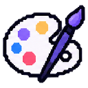

Časť 2 · Stavba e-shopu
Blok 4 z 12
Blok 4 — Základ e-shopu¶
Máš hosting a adresu. Dnes na nej rozbehneš e-shop — zatiaľ prázdny, ale živý: so šablónou, názvom, logom, menu a zámkom HTTPS. Znie to ako maličkosť, no práve tu sa rozhoduje, či zvyšok semestra stráviš stavaním obchodu, alebo bojom so systémom. Poriadne založený základ ti ušetrí hodiny.
Od tohto bloku sa postup delí podľa skupiny: skupina WooCommerce inštaluje WordPress a plugin WooCommerce na svoj hosting, skupina Webnode zakladá e-shop na platforme. Ciele a kontrola na konci sú pre obe rovnaké.
Čo sa v tomto bloku nauč횶
 Čo sa v tomto bloku naučíš
Čo sa v tomto bloku naučíš- Nainštalovať alebo založiť e-shopový systém a prihlásiť sa do jeho administrácie.
- Nastaviť základy: jazyk, menu, krajinu, DPH, názov, logo.
- Zapnúť HTTPS a overiť, že e-shop je verejne dostupný.
- Označiť projekt ako študentský, aby nikoho nezmiatol.
Krok 1 — Rozbehni systém¶
- Nájdi inštalátor. V administrácii hostingu (cPanel, DirectAdmin alebo vlastný panel) hľadaj Softaculous, Installatron, WordPress alebo „1-click install". Vyber WordPress a cieľ inštalácie: tvoja subdoména z bloku 3.
- Vyplň údaje: názov e-shopu, prihlasovacie meno správcu iné než „admin", silné heslo (správca hesiel), e-mail. Jazyk slovenčina.
- Prihlás sa na
tvoja-adresa/wp-admin. Vidíš Nástenku — administráciu WordPressu. Orientácia: WordPress a WooCommerce. - Nainštaluj WooCommerce: Pluginy → Pridať nový → hľadaj „WooCommerce" → Inštalovať → Aktivovať. Spustí sa sprievodca: krajina Slovensko, mena EUR, typ produktov (fyzické, digitálne). Všetko, čo ponúka „vyskúšať zadarmo", platené rozšírenia alebo marketingové doplnky, preskoč — základný WooCommerce stačí na celý predmet.
- Bez inštalátora? Stiahni WordPress z wordpress.org, v paneli hostingu vytvor databázu (zapíš si názov, používateľa, heslo), nahraj súbory cez FTP alebo správcu súborov a otvor svoju adresu — spustí sa inštalácia, do ktorej zadáš údaje databázy. Je to dlhšia cesta, ale naučí ťa, čo inštalátor robí za teba.
Po inštalácii sa v menu vľavo objavia položky WooCommerce a Produkty. Skontroluj Nastavenia → Všeobecné: adresa webu s https://, časová zóna Bratislava, formát dátumu.
- Registruj sa na webnode.sk e-mailom z bloku 3 (alias
meno+webnode@…), bez karty. - Vytvor web a hneď zvoľ typ „E-shop". Toto je najdôležitejší klik dňa — obyčajný web sa na e-shop neskôr mení ťažko alebo vôbec.
- Názov e-shopu určí subdoménu (
nazoveshopu.webnode.skalebo podobnú). Vyber si názov, ktorý znesie aj tlač na banner. - Šablóna: vyber jednoduchú, s dobre viditeľným produktovým výpisom. Vzhľad doladíš v kroku 2, štruktúra šablóny sa neskôr mení ťažko.
- Nastavenia e-shopu: jazyk slovenčina, mena EUR, krajina Slovensko. Prejdi si sekciu E-shop → Nastavenia, aby si vedel, kde sú doprava, platby a e-maily — nastavíš ich v bloku 6. Orientácia: Webnode.
Bezplatný plán ti dá 10 produktov, subdoménu a reklamný prúžok Webnode na stránke. Všetko ostatné, čo budeš potrebovať, v ňom je.

Krok 2 — Identita: názov, logo, farby, menu¶E-shop musí na prvý pohľad vyzerať ako obchod tvojej firmy, nie ako šablóna. Stačí málo, ale dôsledne:
- Názov v hlavičke a v titulku prehliadača (vo WordPresse Nastavenia → Všeobecné, vo Webnode nastavenia webu).
- Logo: ak firma nemá, vyrob jednoduché textové logo v Canve (zadarmo) — názov, jeden symbol, jedna farba. Druhá možnosť: vygeneruj si logo pomocou AI podľa návodu Logo a produktové foto pomocou AI. Žiadne stiahnuté logo z internetu.
- Farby: jedna hlavná, jedna na tlačidlá (akcent), zvyšok neutrálny. Vo WordPresse Vzhľad → Prispôsobiť (alebo Editor pri blokových témach), vo Webnode v nastaveniach šablóny.
- Menu: Domov · Obchod (alebo Produkty) · O nás · Kontakt. Stránky Doprava a platba a Obchodné podmienky pribudnú v blokoch 6 a 7.
- Šablóna (WooCommerce): predvolená téma alebo Storefront stačia. Nekupuj tému a neinštaluj tému stiahnutú mimo oficiálneho katalógu WordPressu — býva zavírená.
Vytvor tri stránky s aspoň jedným odsekom textu: O nás (kto ste, prečo predávate práve toto — použi text z bloku 1), Kontakt (kontaktné údaje firmy, pri fiktívnej fiktívne) a Domov s uvítaním a odkazom na obchod.
Pozri si teóriu¶
 Pozri si teóriu
Pozri si teóriuKrok 3 — HTTPS, DPH a základné nastavenia¶
 Krok 3 — HTTPS, DPH a základné nastavenia
Krok 3 — HTTPS, DPH a základné nastavenia- HTTPS. Vo Webnode je zapnuté automaticky. Na webhostingu ho zapni v paneli (položka SSL, Let's Encrypt), potom vo WordPresse Nastavenia → Všeobecné zmeň obe adresy na
https://. Kontrola: otvor e-shop v novom okne, v adresnom riadku musí byť zámok bez varovania. - DPH. Malá firma pod obratovým limitom nebýva platiteľom DPH — vtedy dane vôbec nezapínaj a ceny sú konečné. Ak je tvoja firma platiteľ, zapni dane (WooCommerce → Nastavenia → Všeobecné → Povoliť dane; vo Webnode v nastaveniach e-shopu) a nastav aktuálnu základnú sadzbu DPH na Slovensku — over si ju, sadzby sa menili. Rozhodnutie napíš do dokumentu.
- Ceny s DPH pre zákazníka. Spotrebiteľ musí vidieť konečnú cenu. Skontroluj, že e-shop zobrazuje ceny vrátane DPH.
Označ projekt ako študentský
Tvoj e-shop je verejný a nájde ho aj vyhľadávač. Aby skutočný návštevník nečakal tovar, daj do pätičky alebo hlavičky viditeľnú vetu: „Študentský projekt predmetu Elektronické obchodovanie — objednávky nie sú záväzné a nevybavujú sa." Vo WordPresse ako textový blok v pätičke (Vzhľad → Prispôsobiť alebo Editor), vo Webnode ako text v pätičke šablóny.
Krok 4 — Kontrola¶
 Krok 4 — Kontrola
Krok 4 — KontrolaOtvor e-shop v anonymnom okne prehliadača (nie prihlásený) a na mobile:
- adresa funguje, zámok HTTPS bez varovania,
- názov a logo firmy v hlavičke, titulok okna nie je „Just another WordPress site" ani názov šablóny,
- menu má Domov, Obchod, O nás, Kontakt a všetky odkazy vedú niekam,
- stránka Obchod existuje (zatiaľ prázdna alebo s ukážkovým produktom),
- veta o študentskom projekte je viditeľná,
- na mobile sa nič neprekrýva a menu sa dá otvoriť.
AI v tomto bloku
Čo jej zveriť: ladenie. Keď sa niečo nedá nájsť alebo vyskočí chyba, opíš AI presne, čo vidíš.
Staviam e-shop v [WooCommerce na WordPresse / Webnode]. V administrácii chcem [čo chceš urobiť], ale [čo sa deje — presná chybová hláška alebo popis]. Používam [názov témy/šablóny]. Poraď mi postup krok za krokom, ako to nájsť alebo opraviť, a povedz, čo si mám skontrolovať, ak to nepomôže.
Čo si overiť: názvy položiek menu sa v každej verzii systému líšia — AI opisuje verziu, ktorú „pozná". Ak položku nenájdeš, hľadaj podobný názov, nie presný. Pluginy, ktoré AI odporučí, over v oficiálnom katalógu WordPressu (počet inštalácií, posledná aktualizácia). A nikdy do AI nevkladaj heslá ani prístupové údaje k hostingu.
Ako je to v praxi
Firma, ktorá zakladá e-shop, si tento blok buď zaplatí, alebo prenajme. Agentúra alebo freelancer postaví WooCommerce e-shop na mieru za stovky až tisíce eur, k tomu platená téma (desiatky eur) a hosting. Platforma (Shoptet, Shopify, Webnode Business) to isté ponúka za mesačný paušál rádovo v desiatkach eur — bez inštalácie, s aktualizáciami a podporou v cene. Za čo firmy platia: nie za kliknutie „Inštalovať", ale za to, že to niekto udržiava — WordPress bez aktualizácií je do roka deravý a e-shop s výpadkom v sezóne stojí viac než rok hostingu.
Výstup bloku¶
 Výstup bloku
Výstup bloku- Živý e-shop na adrese z bloku 3: HTTPS, názov, logo, menu, stránky Domov, O nás, Kontakt a veta o študentskom projekte.
- Prístupové údaje uložené v správcovi hesiel (nie v dokumente projektu).
- Kapitola 4 dokumentu: použitý systém, postup založenia v 5–8 vetách, snímka obrazovky úvodnej stránky.
Kritérium hodnotenia: začínaš plniť Vytvorenie WWW stránok e-shopu (4 b) — hodnotí sa až hotový e-shop po bloku 7.